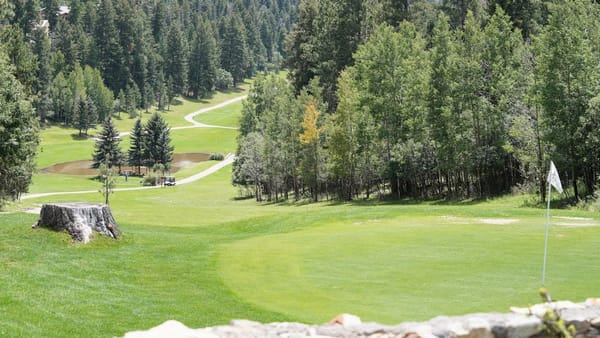
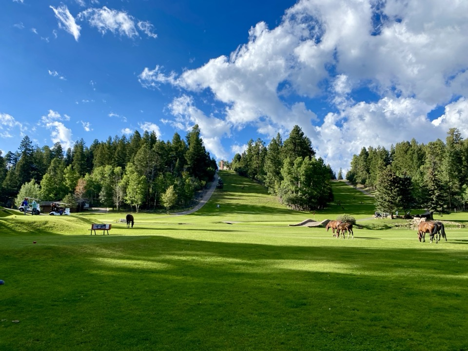
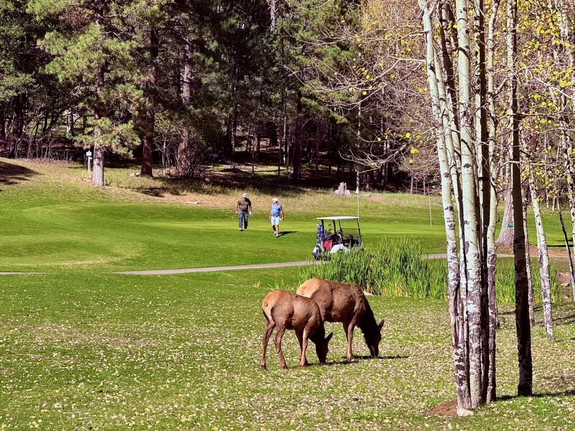
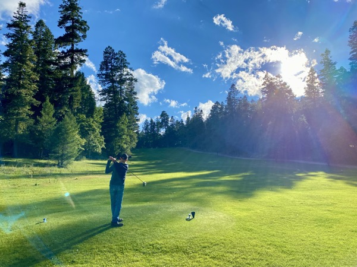

Altitude Golf with Character
If you want to play golf in Cloudcroft, The Lodge Golf Course is the main game that matters. Not because it is the longest or most polished course in New Mexico, but because it is unusually tied to place. You are playing at 8,676 feet, next to one of the region's landmark hotels, on a historic short course that uses a Scottish-style two-loop setup to turn nine holes into an 18-hole experience.
The course is a 9-hole layout — par 34 at about 2,387 yards — played twice for 18 with alternate tees and flag placements. The full 18-hole experience comes in at par 68, roughly 4,500 to 4,800 yards depending on the tee combination. Current official and tourism sources consistently position it as one of the highest courses in New Mexico and one of the core on-site experiences at The Lodge.
This is not a sprawling modern resort layout. The golf experience is shaped by repetition with variation rather than by 18 separate holes. The course likely rewards distance control, trajectory management, and comfort with uneven mountain terrain more than brute force. At this elevation, the ball flies farther than many visitors expect. The challenge is probably more about placement, slopes, wind, and elevation than raw length.
The Lodge's own site leans hard on views, demanding terrain, elk sightings, and the fact that you are golfing at 8,676 feet. New Mexico Tourism and golf-directory sources reinforce the same picture: this is a compact historic course where the routing and elevation are the story. It is a destination golf experience for travelers who like quirky, scenic, shot-making courses and do not need a full-scale modern golf complex to have a good time.

Course Details
Key facts about The Lodge Golf Course at Cloudcroft.
Holes
9 holes, played as an 18-hole experience using alternate tees and flag placements. Scottish-style two-loop format.
Par
Par 34 for 9 holes. Par 68 for the full 18-hole combination.
Yardage
~2,387 yards for 9 holes. ~4,500–4,800 yards for 18, depending on the tee combination.
Elevation
Approximately 8,676 feet — one of the highest golf courses in New Mexico.
Practice
Putting green confirmed by third-party course listings. No driving range currently confirmed.
Carts
Golf carts available for rent. Supported by tee-time listings and course-detail pages.
Club Rentals
Club rentals available. Supported by tee-time listings and course-detail pages.
Walking
Walking allowed. Note: mountain terrain with elevation change — not a flat muni layout.

Highlights
Altitude Golf
One of the highest courses in New Mexico. The ball travels farther, the air is thinner, and the views are extraordinary. This is golf defined by altitude, history, mountain air, and compact shot values. At 8,676 feet, every club plays differently.
Historic Setting
Adjacent to The Lodge at Cloudcroft, dating to 1899. Golf here is inseparable from the hotel experience. The course is one of the core on-site experiences and part of what kept the Lodge recognizable as the Lodge through decades of change.
Mountain Atmosphere
Pine-lined fairways, cool mountain air even in summer, and compact shot values. The opposite of a desert resort layout. A round here fits naturally into a Cloudcroft weekend built around the hotel, dinner, drinks, hiking, and cool weather.

Who It's For
This course is best understood on its own terms.
Best For
Couples on a Lodge weekend, history-minded golfers, altitude-curious players, and casual golfers who enjoy scenery and character over length and modern polish. Golfers who enjoy unusual settings, short-course strategy, and atmosphere over big-resort conditioning.
Pair with The Lodge
The course works best as part of a full Lodge weekend: golf in the morning, dinner at 1899, drinks at Saint Andrew's Lounge, hiking, and mountain air. A round here does not end in a parking lot — it folds into the larger Lodge experience.
Less Ideal For
Golfers who want 7,000-yard championship layouts, deep practice facilities with a full driving range, or guaranteed modern conditioning standards every day of the season. Players seeking long-yardage challenge or a full range-and-practice campus.
The Right Mindset
You are not coming here for a sprawling modern resort layout. You are coming for altitude, history, mountain air, compact shot values, and the fact that a round here fits naturally into a Cloudcroft weekend built around the hotel, dinner, drinks, hiking, and cool weather.
Practical Tips
What golfers should know before they book.
Book a Tee Time
Call the golf shop at (575) 682-2098. Third-party tee-time services like TeeOff and GolfNow also list the course with bookable tee-sheet infrastructure. The Lodge site says "Grab a tee time."
Pair with The Lodge
Best experienced as part of a Lodge stay. Dinner at 1899, drinks at Saint Andrew's Lounge, golf in the morning. 601 Corona Place. A round does not end in a parking lot — it folds into the larger Lodge experience.
Altitude Matters
At 8,676 feet the ball travels farther than many visitors expect. Club selection changes fast. Hydrate, don't push the first few holes. If you came up from Alamogordo or El Paso the same day, the walk and the swing can both feel different. Altitude affects everyone differently.
Weather
Cloudcroft summer weather is usually cooler than the basin below, but mountain weather can turn quickly. Afternoon thunderstorms are not a theoretical concern in summer mountain golf. Bring layers. Course may close for weather or conditions. Spring can be windy.
Rates & Dress Code
Current 2026 rates were not confirmed from official Lodge pages. A Facebook post mentions discounted opening-week rates and a 20% local discount all summer. Dress code not confirmed from a strong current official source. Verify both directly before arriving.
Verify Before You Go
Season dates, exact hours, and availability shift. The usual season runs spring through late October, with weather-driven flexibility. Call the golf shop at (575) 682-2098 or check the Lodge site. The 2026 season is confirmed open per Lodge social media.
Visit The Lodge Golf Course
Everything you need to know before you go.
Location
601 Corona Place, Cloudcroft, NM 88317. On the grounds of The Lodge at Cloudcroft — one of New Mexico's landmark resort hotels.
Contact
Golf shop: (575) 682-2098
Hotel: (575) 682-2566
Web: 223collectionhotels.com/the-lodge
Chamber: coolcloudcroft.com
Season
2026 season confirmed open per Lodge social media. Seasonal operation — the usual season runs spring through late October, with weather-driven flexibility. One current source says open until October 31st. Verify dates directly with the golf shop.
Getting There
Same property as The Lodge at Cloudcroft. Free parking on site. Located on James Canyon Highway / Corona Place, walkable from the hotel. If you are staying at The Lodge, the golf course is steps from your room.
Staying at The Lodge? The golf course is steps from your room. Pair a morning round with dinner at 1899 and drinks at Saint Andrew's Lounge for the full Cloudcroft experience. See our Lodge lodging guide →

Ready to Tee Off at 8,676 Feet?
The Lodge Golf Course is where altitude, history, and mountain air meet. Book a tee time and experience one of the highest courses in New Mexico.